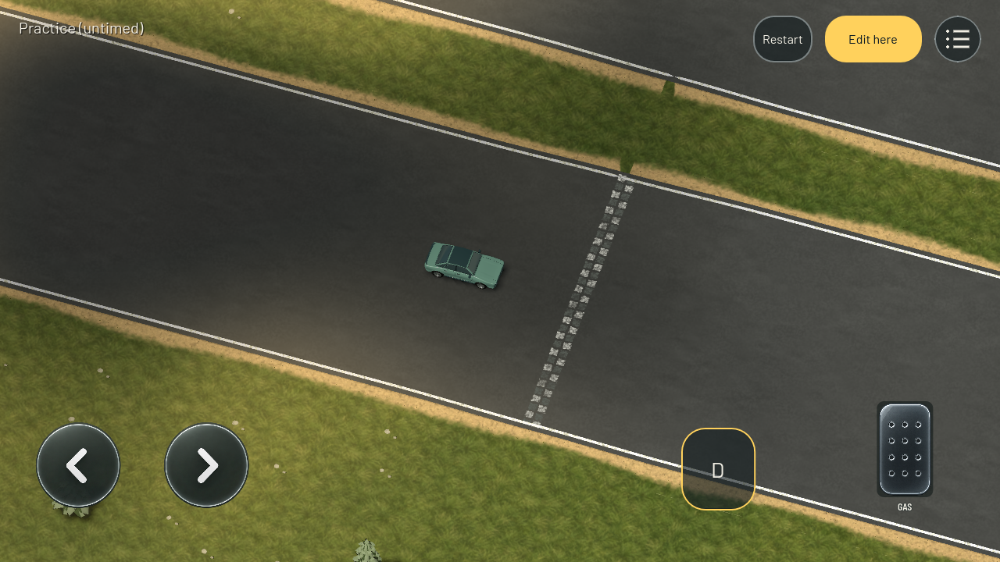

95% steering lock: 83.3 → 41.7 ms. Opposite-steering travel response: 133.3 → 75 ms. Actual direction changes more than twice as far in the first 100 ms across all twelve speed/pedal cases.
Full steering / 45% pedal, measured velocity paths:
| Entry | Old time | New time | Old radius | New radius |
|---|---|---|---|---|
| 43.2 km/h | 0.658 s | 0.533 s | 5.96 m | 4.74 m |
| 86.4 km/h | 0.775 s | 0.608 s | 12.59 m | 9.82 m |
| 129.6 km/h | 1.050 s | 0.867 s | 24.87 m | 20.52 m |
| 172.8 km/h | 1.292 s | 1.092 s | 39.01 m | 33.15 m |
Same strong acceleration and complete regenerative stop. Established power-corner slip is 16.54° versus 17.58° before. All fifteen regression laps report zero contacts; actual five-lap replay verifies independently.
Native response86 / turning61 / power19 / replay60 / one-pedal63 / laps6 / Garage-race59+59 and backend72 checks pass. Desktop Mobile is not phone feel acceptance. Reload and matching online verifier rollout remain.
